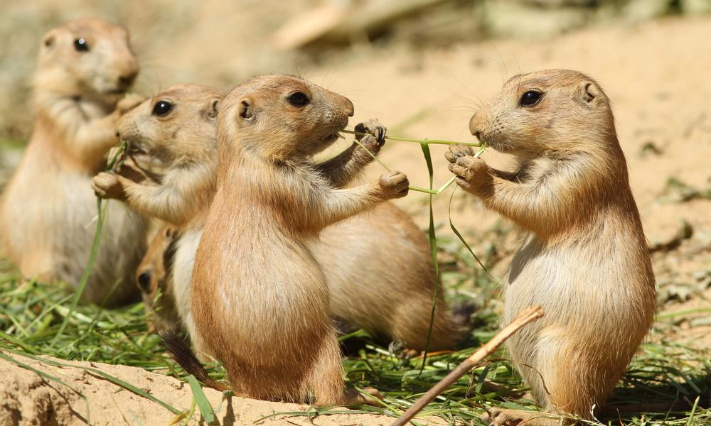

Scientific name: Mustela nigripes
What do BF ferrets look like?
The black-footed ferret has a tan body with black legs and feet, a black tip on the tail and a black mask. The ferret has short legs with large front paws and claws developed for digging. Its large skull and strong jaw and teeth are adapted for eating meat.
What's their diet
Prairie dogs make up more than 90 percent of the black-footed ferret's diet. A ferret can eat more than 100 prairie dogs in one year. Black-footed ferrets are also known to eat ground squirrels, small rodents, rabbits and birds.
A healthy population of black-footed ferrets requires very large groups of prairie dog colonies. Scientists estimate that a healthy population of ferrets requires more than 10,000 acres of prairie dogs to survive long term. Very few clusters of prairie dogs of this magnitude remain today, which makes conservation of these and smaller prairie dog colony groups, essential for the recovery of ferrets and other species that rely on these ecosystems.

Behavior?
Black-footed ferrets spend about 90 percent of their time underground, where they eat, sleep and raise their young in prairie dog burrows. They are nocturnal, and leave their burrows at night to hunt. They are solitary creatures except during breeding season.
Population?
Black-footed ferrets once numbered in the tens of thousands, but exotic diseases and widespread destruction of their habitat in the 1900s drove them to the brink of extinction. By 1986, only 18 remained - all in captivity. Today, the ferrets are slowly making a comeback, with wild populations numbering in the hundreds. Populations are still highly variable because of the species' dependence on prairie dog populations.
Reproduction
Prairie dog colonies have been reduced to less than 5% of the area they originally occupied. In addition to habitat loss, humans pose a great threat to prairie dogs, which they often consider vermin. Prairie dogs are lost to poisoning and shooting by those wishing to eradicate them from their land. Sylvatic plague - an exotic disease to which prairie dogs have no known immunity - has also decimated these animals. The remaining colonies of prairie dogs today are relatively small and fragmented, often separated by great distances. Without sustainable populations of their main food source, black-footed ferrets cannot survive.
Protection?
- ADOPT AN ANIMALL: A symbolic adoption helps save real animals in the wild.
- TAKE ACTION: Visit our Wildlife Action Center to send a message to government leaders.
- STAY INFORMED: Sign up to receive instant alerts and updates about important issues affecting wildlife.
- SPEAK UP FOR WILDLIFE: Learn how you can be a powerful advocate for wildlife.
- STAY INFORMED: Sign up to receive instant alerts and updates about important issues affecting wildlife.
- BECOME A DEFENDER OF WILDLIFE: Your Defenders membership includes our quarterly publication with fascinating articles and stunning photos of wild animals in their natural habitats.